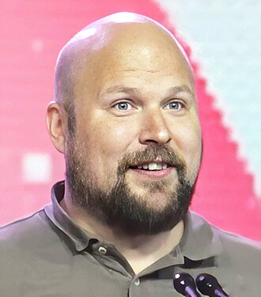

minecraft
Minecraft là trò chơi điện tử sandbox được phát triển và phát hành bởi Mojang Studio. Trò chơi được tạo bởi Markus "Notch" Persson bằng ngôn ngữ lập trình Java. Sau khi thử nghiệm một số phiên bản riêng tư ban đầu, trò chơi được công khai rộng rãi lần đầu tiên vào tháng 5 năm 2009 trước khi phát hành đầy đủ vào tháng 11 năm 2011 với việc Notch từ chức và Jens "Jeb" Bergensten tiếp quản công việc phát triển. Kể từ đó Minecraft được chuyển sang một số nền tảng khác và trở thành trò chơi điện tử bán chạy nhất mọi thời đại với hơn 238 triệu bản được bán ra và gần 140 triệu người dùng hoạt động hằng tháng tính đến năm 2021. Trong Minecraft, người chơi khám phá thế giới 3D hình khối được tạo ngẫu nhiên với địa hình gần như vô hạn, đồng thời có thể khám phá và khai thác các nguyên liệu thô, chế tạo công cụ và vật phẩm, xây dựng các công trình và máy móc đơn giản. Tùy thuộc vào chế độ chơi, người chơi có thể chiến đấu với các mob được điều khiển bởi máy tính cũng như hợp tác hoặc cạnh tranh với các người chơi khác trong cùng một thế giới. Trò chơi có các chế độ bao gồm chế độ sinh tồn trong đó người chơi cần tài nguyên để xây dựng thế giới và duy trì sức khỏe (thanh máu và thanh thức ăn) và chế độ sáng tạo cho phép người chơi sử dụng nguồn tài nguyên không giới hạn và có thể bay. Người chơi có thể sửa đổi trò chơi để tạo các cơ chế chơi, vật phẩm và nội dung mới. Minecraft nhận được sự hoan nghênh của giới phê bình, giành được một số giải thưởng và được coi là trò chơi điện tử hay nhất mọi thời đại. Các phương tiện truyền thông xã hội, parody, các chuyển thể, sản phẩm và quy ước Minecon hằng năm đóng vai trò lớn trong việc phổ biến trò chơi. Trò chơi cũng đã được sử dụng trong môi trường giáo dục để giảng dạy hóa học, thiết kế được sự hỗ trợ bởi máy tính và khoa học máy tính. Vào năm 2014, Mojang và IP Minecraft đã được mua lại bởi Microsoft với 2,5 tỷ đô la Mỹ. Một số trò chơi spin-off cũng đã được thực hiện bao gồm Minecraft: Story Mode, Minecraft Dungeons, Minecraft Legends và Minecraft Earth.
Lối chơi
Minecraft là một trò chơi thế giới mở mà không có mục tiêu cụ thể cho người chơi để thực hiện, cho phép người chơi có thể tự do lựa chọn chơi như thế nào.[18] Tuy nhiên, Minecraft vẫn sẽ có một hệ thống thành tích mặc định.[19] Góc nhìn mặc định của trò chơi là góc nhìn thứ nhất, nhưng người chơi có thể lựa chọn chơi ở góc nhìn thứ ba hoặc ở góc nhìn ngay trước mặt mình.[20] Thế giới trong trò chơi được tạo ra cho người chơi chủ yếu là các khối lập phương 3D nằm trong bản đồ và tượng trưng cho các vật liệu khác nhau (ví dụ như đất, đá, các loại quặng, dung nham, nước, gỗ,...) Người chơi có thể di chuyển tự do trên toàn thế giới, các khối chỉ có thể được đặt ở một vị trí cố định nào đó. Người chơi có thể thu thập các khối vật chất và đặt chúng ở những nơi khác để xây dựng công trình khác nhau.[21] Vào lúc bắt đầu trò chơi, người chơi được tạo trên bề mặt của một thế giới hoang sơ và hầu như vô hạn.[22] Thế giới được chia thành nhiều quần xã sinh vật khác nhau (sa mạc, rừng cho tới vùng đất tuyết).[23][24] Người chơi có thể đi lại trên các địa hình đồng bằng, núi, rừng, hang động, khe nứt, đầm lầy và các vùng nước khác nhau.[22] Thời gian ở trong trò chơi được hệ thống theo một chu kỳ ngày đêm, với một chu kỳ đầy đủ kéo dài 20 phút thời gian thực. Trong suốt quá trình chơi, người chơi sẽ được gặp nhiều sinh vật được gọi là "mobs" bao gồm các loài động vật, dân làng và các quái vật.[25] Những động vật như bò, bò nấm, lợn, gà, cừu, ngựa, gấu Bắc Cực, thỏ, cá heo, rùa, mực, dê núi có thể được săn bắt để ăn hay chế tạo vật phẩm và vật liệu, được sinh ra vào ban ngày hoặc bằng các loại trứng spawn ở chế độ sáng tạo. Kỳ giông Mexico, Iron Golem, Snow Golem,... là những mobs tiện ích có thể giúp người chơi tấn công một số quái vật. Ngược lại, những quái vật như nhện, skeleton và thây ma được sinh ra vào ban đêm hoặc trong những nơi tối tăm như hang động, khe vực và thù địch với người chơi.[22] Một số sinh vật trông đặc biệt và nguy hiểm chỉ có trong Minecraft như Creeper, một sinh vật nổ lén đằng sau người chơi, và Enderman, một sinh vật có khả năng dịch chuyển và nhặt khối tự do. Creeper có thể xuất hiện vào ban đêm, tuy nhiên không giống như những quái vật khác, Creeper không bị cháy khi tiếp xúc với nắng. Thế giới trong trò chơi được tạo ra một cách ngẫu nhiên trong lúc người chơi khám phá nó, bằng cách sử dụng một tọa độ (gọi là seed, cùng nghĩa với từ hạt giống, chính điều này khiến nhiều người lầm tưởng chúng là hạt giống) được tạo ra từ hệ thống, trừ khi người chơi muốn tạo tọa độ theo ý mình.[27][28] Mặc dù có những hạn chế về di chuyển lên và xuống, Minecraft cho phép tạo ra một thế giới vô cùng lớn hoàn toàn là một mặt phẳng nằm ngang. Trò chơi đạt được điều này bằng cách chỉnh sửa dữ liệu trong thế giới đang chơi thành các phần nhỏ hơn gọi là "khối", mà chỉ được tạo ra hoặc được nạp vào bộ nhớ khi người chơi đang chơi.[27] Hệ thống vật lý của trò chơi thường được mô tả bởi các nhà phê bình là không thực tế.[29] Hầu hết các khối rắn không bị ảnh hưởng bởi lực hấp dẫn. Chất lỏng chảy ra từ một nguồn nằm trong một khối có thể dừng dòng chảy bằng cách đặt một khối vững chắc ở nguồn của nó, hoặc bằng cách múc nó bằng một cái xô. Các hệ thống phức tạp có thể được xây dựng bằng cách sử dụng các thiết bị cơ khí thô sơ, mạch điện, và các cánh cổng tự động được xây dựng bởi một vật liệu trong trò chơi được gọi là Đá đỏ (Redstone).[30] Minecraft có hai thế giới khác ngoài thế giới chính (Overworld) là Nether (Địa Ngục) và The End (Thế giới Tận Cùng hay Thế giới Kết Thúc).[26] Nether là một thế giới được đi tới bằng một cánh cổng được người chơi xây bằng hắc diện thạch có diện tích ít nhất là 2×3 và diện tích trung bình là 3×4 (Obsidian và khởi động bằng dụng cụ đánh lửa, cầu lửa, Ghast,...) nơi này chứa nhiều tài nguyên độc đáo, quái vật lạ, pháo đài, Tàn tích Bastion, rừng và dung nham. Nether cũng rộng lớn như thế giới thực.[31] The End là một chiều không gian bóng tối bao gồm các hòn đảo riêng biệt trong khoảng không được làm từ đá end, quê hương của những Enderman, Shulker (trong các End City) được boss cuối của game là Rồng Ender (tiếng Anh: Ender Dragon) cai quản.[32] Sau khi hạ gục Rồng Ender, thế giới sẽ tạo ra cổng end cho phép người chơi đi đến các hòn đảo ngoài chứa những End City, kích hoạt cổng thoát, văn bản kết thúc và các điều khoản của trò chơi được viết bởi Irish Julian Gough sẽ hiện ra khi người chơi vào cổng.[33] Người chơi sau đó được cho phép dịch chuyển trở lại điểm hồi sinh của họ hoặc điểm hồi sinh của thế giới, và sẽ nhận được thành tích "Free the End". Ngoài ra còn có một boss thứ hai được gọi là "The Wither" hay "Wither Boss" (Quái vật khô héo), khi đánh bại nó, rơi ra một vật phẩm là sao Nether mà khi dùng nó có thể chế tạo ra đèn hiệu"(tiếng Anh:Beacon), một khối có thể dùng để đánh dấu vị trí hoặc giúp cho người chơi nhận được những hiệu ứng trong phạm vi nhất định dựa theo những khối sắt, vàng, ngọc lục bảo, kim cương hoặc Netherite được xây dựng thành hình kim tự tháp và đèn hiệu được đặt trên đỉnh. Trò chơi chủ yếu bao gồm bốn chế độ chơi: chế độ sinh tồn, chế độ sáng tạo, chế độ phiêu lưu, và chế độ khán giả. Nó cũng có một hệ thống độ khó có thể thay đổi gồm bốn cấp độ, từ khó đến dễ với dễ nhất là bình yên và khó nhất là Hardcore.[34]
Chế độ chơi
Minecraft có 3 chế độ chơi chính: Sinh tồn, Phiêu lưu và Sáng tạo. Chế độ Khán giả chỉ cho phép tham quan, không cho phép tương tác với thế giới trong trò chơi nhưng có thể đi xuyên khối. Chế độ Phiêu lưu được thiết lập cho những thế giới được thiết kế sẵn nhằm bổ trợ cho một cốt truyện hoặc mục tiêu khác của bên thứ ba ngoài tuyến cốt truyện chính của Minecraft.
Chế độ sinh tồn (Survival)
Người chơi phải tìm kiếm tài nguyên thiên nhiên như gỗ, và đá để tạo các khối và vật phẩm khác. Tùy thuộc vào độ khó, quái vật sẽ được sinh ra ở khắp nơi, khiến người chơi phải tìm hoặc xây dựng nên một nơi trú ẩn. Chế độ này có thanh máu và thanh đói, nguyên nhân chết trong trò chơi được hiển thị sau khi chết trong khuông lệnh. Trong Minecraft, người chơi chỉ được mang đồ với số lượng hạn chế, với trên tay chính là 9, tay phụ là 1. Thanh kinh nghiệm giúp bạn cường hóa dụng cụ và vũ khí, lấy kinh nghiệm bằng nhiều hoạt động khác nhau (trao đổi, khai khoáng, đánh quái). Mục tiêu chính của chế độ theo hệ thống thành tích trong trò chơi là đánh thắng Wither, sau đó là Rồng Ender. Sau khi đánh bại Rồng Ender, trò chơi được coi là hoàn thành, bạn vẫn có thể quay lại thế giới cũ để tiếp tục chơi.
Chế độ sáng tạo (Creative)
Trong chế độ sáng tạo, người chơi có nguồn cung cấp vật phẩm và vật liệu vô hạn, có gần như tất cả các tài nguyên và dụng cụ trong trò chơi. Họ có thể đặt hoặc phá bỏ chúng ngay lập tức.[35] Người chơi còn có khả năng bay lượn tự do trên khắp thế giới trong trò chơi, không bị tấn công hay chết vì các nguyên nhân khác (vẫn có thể chết bởi nhảy xuống The Void ở Java Edition).[36][37] Chế độ này chủ yếu để người chơi sáng tạo và làm nên các công trình lớn.[35]
Chế độ khán giả (Spectator)
Chế độ này cho phép người chơi bay xuyên qua các khối và nhìn mọi vật trong trò chơi nhưng không thể tương tác với chúng. Bạn cũng có thể xem từ điểm nhìn của một người chơi khác hoặc các sinh vật khác. Một số thứ có thể trông khác nhau từ góc nhìn của sinh vật khác.[38](VD: Creeper: Creeper sẽ nhìn thấy toàn màu xanh lá.)
Chế độ siêu khó (Hardcore)
Chế độ siêu khó cho người chơi trải nghiệm như Survival (Sinh tồn) nhưng lại giống ngoài đời thật, bạn chỉ có 1 lần sống duy nhất. Nếu chết thì kết thúc trò chơi, bạn không thể hồi sinh nhưng vẫn có thể lựa chọn xóa thế giới hoặc tham quan lại qua chế độ Khán giả. Chế độ này chỉ có sẵn trên Minecraft: Java Edition. Vào ngày 24 tháng 4 năm 2019, một youtuber tên Ph1LzA đã lập kỉ lục thế giới với thời gian sống sót trong một thế giới Hardcore lâu nhất với thời gian là 5 năm kể từ bắt đầu vào tháng 3 năm 2014. Điều này đã thu hút BBC làm phỏng vấn cùng với anh vào ngày 29 tháng 4 năm 2019.[43]
Nhiều người chơi (Multiplayer)
Chế độ này cho phép người chơi có thể kết nối với các máy chủ khác để cùng xây dựng các công trình trong một thế giới duy nhất. Nhưng bạn cần IP (Internet Protocol), tạo máy chủ riêng hoặc dùng mạng LAN ảo Hamachi, Radmin VPN hoặc có thể tạo máy chủ trên các trang web khác, chỉ cần sao chép liên kết và vào Chơi mạng và nhập địa chỉ máy chủ vào. Ở phiên bản Bedrock Edition thì người chơi có thể sử dụng tài khoản Microsoft để đăng nhập Xbox.
Chế độ LAN
Trong cùng nhiều mạng Wi-Fi, bạn bè có thể kết nối các thiết bị với nhau để chơi cùng 1 thế giới. Cần 1 người làm host để duy trì.
Chế độ Realms (Cõi)
Chế độ này là một chế độ có trên cả Java Edition và Bedrock Edition , cũng giống như chế độ bạn bè nhưng mà bạn sẽ có thể chơi với nhau mà không cần cùng mạng Wi-Fi, nhưng để chơi chế độ này bạn cần bỏ ra một số tiền nhất định hàng tháng để chơi chế độ này.
Độ khó
Trò chơi có 4 độ khó (nếu tính cả Hardcore sẽ là 5): Bình yên, Dễ, Bình thường và Khó. Trừ ba độ khó phía sau thì Bình yên có vài ưu điểm cho người chơi mới.
Độ khó Bình yên
Độ khó này cho phép người chơi không cần ăn ở chế độ Sinh tồn trong Minecraft vì thanh thức ăn không giảm, ngoài ra độ khó này còn loại bỏ một số sinh vật thù địch và trung lập. Các mobs lành tính (như sói, cá heo, gấu trúc) nếu bị tấn công và tấn công người chơi, người chơi sẽ không nhận bất kỳ sát thương nào. Đồng thời, tốc độ hồi lại thanh máu của độ khó này cũng rất nhanh khi bị nhận sát thương.
Phát triển
Markus "Notch" Persson đã bắt đầu phát triển Minecraft như một dự án. Ông đã được truyền cảm hứng bởi một số trò chơi khác như war Fortress, Dungeon Keeper và sau đó là Infiniminer. Vào thời điểm đó, ông đã hình dung một trò chơi xây dựng 3D. Infiniminer ảnh hưởng nhiều đến phong cách của trò chơi, bao gồm cả các khía cạnh người chơi, các "khối ô vuông" và các nguyên tắc cơ bản để xây dựng. Tuy nhiên, không giống như Infiniminer, Persson muốn Minecraft có yếu tố RPG. Minecraft lần đầu tiên được phát hành cho công chúng vào ngày 17 tháng 5 năm 2009, như là một phiên bản phát triển trên diễn đàn TIGSource, sau đó trở nên nổi tiếng như là phiên bản cổ điển. Bản cập nhật lớn đầu tiên, được gọi là phiên bản alpha, đã được phát hành vào ngày 28 tháng 6 năm 2010. Persson duy trì công việc với Minecraft bằng toàn bộ thời gian sau khi phiên bản alpha của trò chơi phát triển. Persson tiếp tục cập nhật những phiên bản mới của trò chơi cho người dùng một cách tự động. Những bản cập nhật bao gồm các tính năng như các mặt hàng mới, khối mới, quái vật mới, chế độ, và thay đổi hành vi của trò chơi (như cách hoạt động của nước). Để phát triển của Minecraft, Persson lập một công ty trò chơi tên là Mojang. Vào ngày 11 tháng 12 năm 2010, Persson thông báo rằng Minecraft đã bước vào giai đoạn thử nghiệm beta của nó ngày 20 tháng 12 năm 2010. Trong quá trình phát triển, Mojang đã thuê một số nhân viên mới để làm việc trên dự án.
Âm nhạc
Âm nhạc và các hiệu ứng âm thanh trong Minecraft chủ yếu được sản xuất bởi nhà thiết kế âm thanh người Đức Daniel "C418" Rosenfeld.[44] Ngày 4 tháng 3 năm 2011, Rosenfeld phát hành một album mang tên Minecraft – Volume Alpha; nó bao gồm hầu hết các âm thanh đặc trưng trong Minecraft, cũng như nhạc âm khác không có trong game. Blog video game Kotaku đã chọn âm nhạc trong Minecraft là một trong những album nhạc game hay nhất của năm 2011. Ngày 9 tháng 11 năm 2013, Rosenfeld đã phát hành album chính thức thứ hai, mang tên Minecraft - Volume Beta, trong đó bao gồm các bản nhạc được thêm vào trong phiên bản mới của trò chơi. Tính đến thời điểm hiện tại trò chơi đã chính thức có thêm 04 đĩa nhạc mới không phải do C418 sản xuất, bao gồm: Pigstep, Otherside - Lena Raine; Disc 5 - Samuel Åberg; Relic - Aaron Cherof.

Các phiên bản
Phiên bản Minecraft: Java Edition là phiên bản đầu tiên được phát hành của trò chơi được phát hành vào ngày 17 tháng 5 năm 2009. Nó được thiết kế để dành cho các máy tính chạy hệ điều hành Windows, MacOS hay Linux. Nó hiện là phiên bản duy nhất có một Launcher riêng để chạy game, đi kèm với Java phiên bản 1.8.0_51 và là phiên bản Java mặc định của Minecraft: Java Edition, tuy nhiên người chơi cũng có thể thay đổi phiên bản Java đang sử dụng.
Minecraft: Legacy Console Edition
Minecraft: Legacy Console Edition từng là một nhóm phiên bản Minecraft dành cho các hệ máy game console, từng được phát triển bởi Mojang và 4J Studios. Bản Digital - Marketplace lần đầu tiên được phát hành cho hệ máy Xbox 360 vào ngày 9 tháng 5 năm 2012, và bản Retail - DVD đã được phát hành 1 năm sau đó. Hiện tại, bản Legacy Console Edition đã bị ngưng phát triển, do số lượng người chơi hiện nay quá thấp. Tuy nhiên, những bản cập nhật vẫn được phát hành cho hệ máy PlayStation 4, còn hệ máy Xbox One và Nintendo Switch thì được nhận các bản cập nhật qua phiên bản Minecraft độc lập khác, Minecraft: Bedrock Edition. Minecraft: Legacy Console Edition bao gồm các phiên bản sau đây:
- Minecraft: Xbox 360 Edition
- Minecraft: Xbox One Edition
- Minecraft: PS3 Edition
- Minecraft: PS4 Edition
- Minecraft: PS Vita Edition
- Minecraft: Nintendo Switch Edition
Minecraft: New Nintendo Switch 3DS Edition
Đây là phiên bản Minecraft dành cho hệ máy New Nintendo 3DS, New Nintendo 3DS XL và New Nintendo 2DS XL, phiên bản này lần đầu tiên được phát hành trên Nintendo eShop ở khu vực Bắc Mỹ và Nhật Bản vào ngày 13 tháng 9 năm 2017. Sau đó, phiên bản này đã được phát hành toàn cầu vào ngày 20 tháng 9 năm 2018, chỉ một năm và bảy ngày từ ngày phát hành đầu tiên. Mặc dù phiên bản gốc chỉ là một phiên bản khác của Minecraft: Pocket Edition Alpha 0.15.4, nó có thêm vài tính năng mới và những sửa đổi mới so với Pocket Edition, và được phát triển chỉ dành riêng cho hệ máy New Nintendo 3DS. Nó không có mối liên hệ nào với Minecraft: Legacy Console Edition và khá tương đương với Minecraft: Pocket Edition 1.1.5.1. Phiên bản này đã bị ngưng phát triển với phiên bản mới nhất là 1.9.19 vào ngày 15 tháng 1 năm 2019.
Minecraft: Bedrock Edition
Là một phiên bản Minecraft được lập trình lại nhằm tránh sự phân rã quá nhiều phiên bản trên nhiều thiết bị giống nhau như Legacy Edition, viết bằng ngôn ngữ C++, người chơi có thể mua/tải về các DLC qua Minecraft Marketplace hoặc cài mod như Java Edition (Chỉ hỗ trợ trên điện thoại). Bedrock Edition được viết nhằm hỗ trợ chơi trực tuyến đa nền tảng (cross-platform multiplayer). Ngoài ra, phiên bản Bedrock Edition có thể chạy trên máy tính nhưng với cái tên "Windows Edition"
Minecraft: Education Edition
Đây là phiên bản Minecraft dành cho giáo dục dành cho giáo viên và học sinh. Nhiều nước đã áp dụng phiên bản này như một môn học bắt buộc (Trong đó có cả Việt Nam nhưng chưa được phổ biến rộng rãi). Ở phiên bản này, chế độ PVP đã bị loại bỏ và thêm vào các items, block và mob mới và các tính năng liên quan đến lập trình, đặc biệt là áp dụng với môn Hóa học.
Minecraft: Raspberry Pi Edition
Đây là phiên bản Minecraft được Mojang phát triển dành riêng cho bo mạch nhúng Raspberry Pi dựa trên một phiên bản cực kì cũ của Minecraft: Pocket Edition. Ở phiên bản này, người chơi có thể sửa đổi thế giới của mình thông qua các dòng lệnh, thậm chí là thay đổi mã nguồn của game. Phiên bản này được phát hành chính thức vào ngày 11 tháng 2 năm 2013[45]
Minecraft: Chinese Edition
Đây là phiên bản Minecraft dành riêng cho thị trường Trung Quốc, được phát hành bởi Mojang AB, NetEase và Microsoft Studio, hiện đã bước qua giai đoạn Closed Beta[46]
Minecraft Earth
Minecraft Earth lần đầu được giới thiệu vào ngày 17 tháng 5 năm 2019, nhân kỉ niệm 10 năm lập trình ra Minecraft. Dự kiến sẽ ra mắt bản chính thức vào cuối năm 2019 trên nền tảng Android và iOS (theo sự kiện Minecoin Live 2019). Minecraft Earth đã được ra mắt chính thức và có thể chơi trên IOS 13 và Android 7 trở lên (cần có AR để chơi). Tuy nhiên theo nguồn tin chính thức từ Microsoft, đến ngày 30/6/2021, Minecraft Earth đã chính thức bị khai tử và xóa khỏi tất cả cửa hàng ứng dụng, những ai đã mua Ruby (hồng ngọc) sẽ được tặng lại Minecoins và một bản sao của Minecraft (phiên bản Bedrock).
Minecraft Dungeons
Minecraft Dungeons được giới thiệu lần đầu vào tháng 10 năm 2018 và được phát hành chính thức vào ngày 26 tháng 5 năm 2020 trên nền tảng Windows, hiện Double Eleven đang làm việc cho Minecraft Dungeons để trò chơi được chuyển sang các hệ máy cầm tay.
Minecraft Legends
Minecraft Legends là một trò chơi chiến lược hành động. Nó được dự kiến sẽ phát hành cho Microsoft Windows, Nintendo Switch, PlayStation 4, PlayStation 5, Xbox One và Xbox Series X/S vào ngày 18 tháng 4 năm 2023 phát triển bởi Mojang Studios và Blackbird Interactive, được xuất bản bởi Xbox Game Studios.
Phát hành
Mojang phát hành phiên bản đầy đủ của Minecraft vào ngày 18 tháng 11 năm 2011. Trò chơi đã được cập nhật liên tục kể từ khi phát hành, với những thay đổi khác nhau, từ nội dung mới đến các host máy chủ mới. Vào ngày 28 tháng 2 năm 2012, Mojang thông báo rằng họ đã thuê được nhà phát triển của nền tảng máy chủ phổ biến CraftBukkit để hỗ trợ thay đổi máy chủ Minecraft. Mojang dường như nắm quyền sở hữu đầy đủ cho việc sửa đổi CraftBukkit. Ngày 15 tháng 9 năm 2014, Microsoft đã công bố một thỏa thuận mua Minecraft với giá 2,5 tỷ đô la Mỹ, cùng với quyền sở hữu trí tuệ về Minecraft. Thỏa thuận này đã được đề xuất bởi Persson khi anh đăng một tweet trên Twitter hỏi một công ty mua cổ phần của mình và hiện tất cả phiên bản nâng cấp của Minecraft đều thuộc Microsoft.